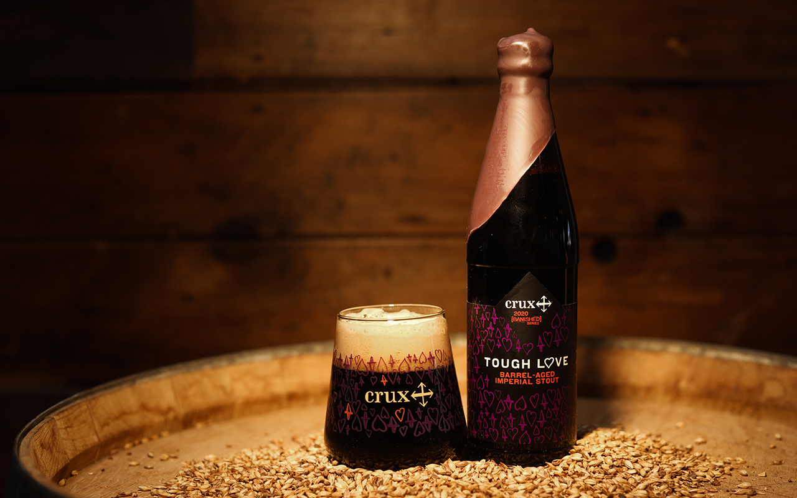

HOME
STOUTS
Tough Love
Crux Fermentation Project
Tough Love is bold but nuanced, an homage of sorts to the traditional Russian Imperial Stouts and the ruling style of Catherine the Great. We construct it with dark roasted malts, malted rye, and oak-smoked wheat, and then banish it in Kentucky bourbon barrels. The aging process smooths out the edges on an otherwise bold statement, and bitterness succumbs to tender strokes of vanilla beans, hints of dried cherries, and new layers revealing themselves with each sip. (Released annually in November)
Located in Bend, Oregon, Crux Fermentation Project opened its garage doors on June 30, 2012. "Crux was a labor of love. To all of you who contributed ideas, materials, sweat and support to the project (and are represented on the wall of paper portraits), THANK YOU."
Check out their site HERE 